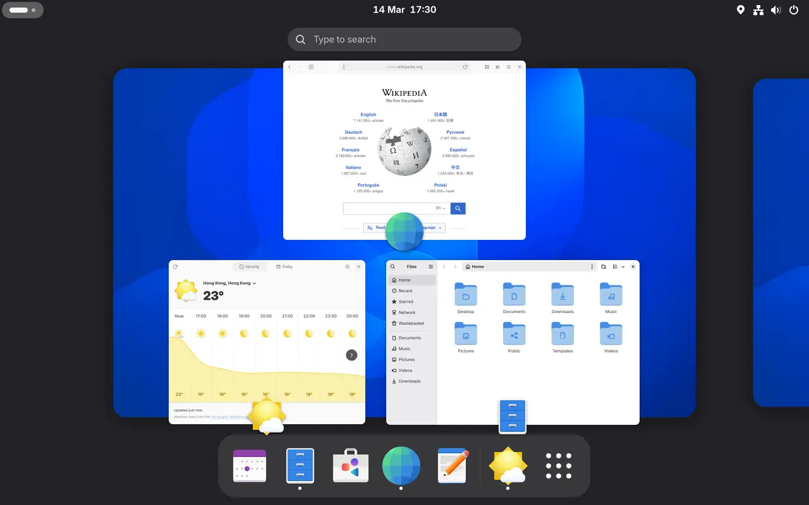

GNOME 50
SKU GNO-50-WAY · Wayland only · no taskbar included
Buy this only if you intend to adopt its keyboard-driven, workspace-centric workflow wholesale. Bolting Windows back onto it is the expensive path.
- Wayland maturity
- Very good [17]
- Shipping weight (idle RAM)
- ~2.10 GB [15]
- Customisation model
- Third-party JS extensions
- Upgrade fragility
- High
- Gestures
- Best, zero config [18]
⚠ Fine print — the extension tax
There is no built-in taskbar, tray or dock-with-window-buttons. Getting them means extensions, and extensions are third-party JavaScript pinned to a shell version. On the GNOME 50 upgrade, popular system extensions including dash-to-dock and appindicator support were simply deactivated because they had not been updated. [34]
Zorin users hit a shell update on 1 Jul 2026 that left every system extension stuck in INITIALIZED with canChange=false. [35]
The structural cause is worse than slow developers: extension review on extensions.gnome.org runs through one person, and in spring 2026 that reviewer lost reliable internet access for geopolitical reasons while the queue climbed to nearly 500 submissions — many of them one-line compatibility bumps. [3]
Global hotkeys — push-to-talk, screenshot keys, clipboard tools — do not work: GNOME 50 has no functional GlobalShortcuts portal backend. [2]